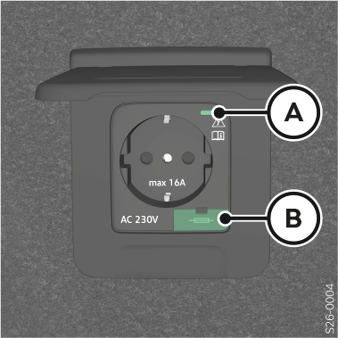

La prise de courant permet à la batterie haute tension du véhicule d’alimenter des appareils électriques en courant alternatif 230 V.
Le type de prise de courant peut varier selon les pays.
L’intensité maximale dépend du type de prise de courant. La valeur exacte est indiquée sur la prise de courant.
Le chargeur de batterie du véhicule supporte un courant de charge de 16 A maximum.
Si la puissance absorbée des appareils électriques branchés tombe sous les 20 W, la fonction Vehicle-to-Load est automatiquement désactivée au bout de 30 minutes environ. (Sauf pendant la conduite) .
Affichage d’état sur la prise de courant 230 V

- A
Témoin
- B
Fusible remplaçable
Le fusible remplaçable protège des surcharges et des courts-circuits.

La prise de courant peut être utilisée pour recharger le véhicule avec du courant continu (CC). Si la fiche de recharge (CC) est branchée ou débranchée pendant l’utilisation de la prise de courant, l’alimentation en courant de l’appareil est interrompue. Pour rétablir l’alimentation électrique de l’appareil branché, débrancher et rebrancher la fiche de l’appareil.